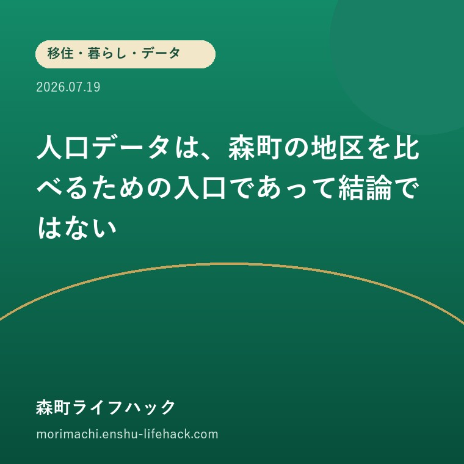

移住・暮らし・データ
人口データは、森町の地区を比べるための入口であって結論ではない

この記事の要点
Q. 地区別人口を見れば、住みやすい地区が分かりますか？
A. 分かるのは人口規模と構成の一部です。交通、医療、買い物、地域活動、災害リスクを重ねて判断する必要があります。
森町の六地区は人口規模が異なります。公表資料の時点を確かめ、数字だけで地域の将来や暮らしやすさを決めない読み方を考えます。
まず、公式資料から事実を整理する
森町の地域福祉に関する公表資料には、2023年10月1日時点の住民基本台帳をもとに六地区の人口が掲載されています。数字は有用ですが、特定時点の記録であり現在値とは限りません。

評価——良い点と、注文したい点
良い点
- 地区別の規模を同じ時点の数字で比較できる
- 福祉や地域づくりを考える基礎資料になる
注文したい点
- 古い時点の人口を現在の人数として扱わない
- 人口が少ないことを暮らしにくさと直結させない

大石の視点
最後に一言。不動産では人口の多い少ないより、本人の生活動線と地域の支えが合うかが重要です。数字は現地で何を聞くべきかを決める質問表として使うのがよいと思います。
確認する順番
- 1. 資料の基準日と出典を確認する
- 2. 交通・医療・買い物の情報を重ねる
- 3. 現地で自治会や日常の助け合いを尋ねる
まとめ
- 分かるのは人口規模と構成の一部です。交通、医療、買い物、地域活動、災害リスクを重ねて判断する必要があります。
- 地区別の規模を同じ時点の数字で比較できる
- 古い時点の人口を現在の人数として扱わない
参考にした公式情報
- 森町地域福祉に関する公表資料／静岡県森町（2026年8月5日確認）
最終確認日：2026-08-05 ／ 本記事は公表情報と執筆者の見解を分けて記載しています。制度・開催・公開状況は変更される場合があるため、最新情報は公式ページでご確認ください。